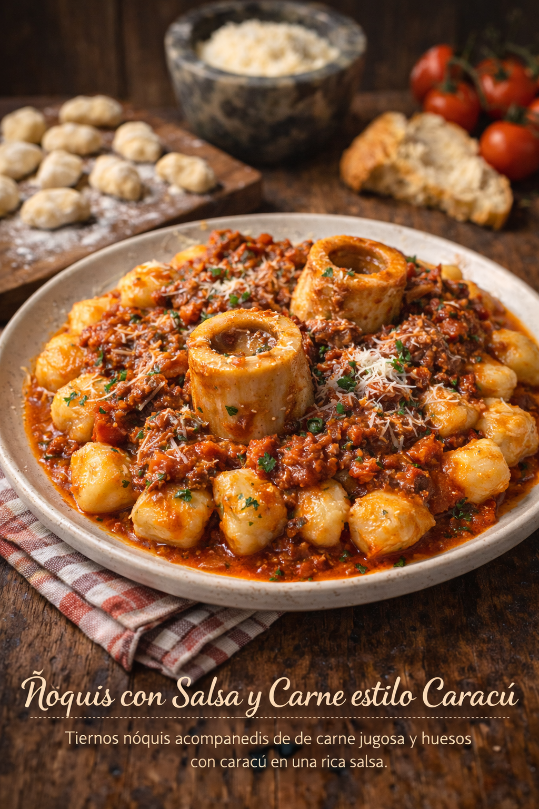
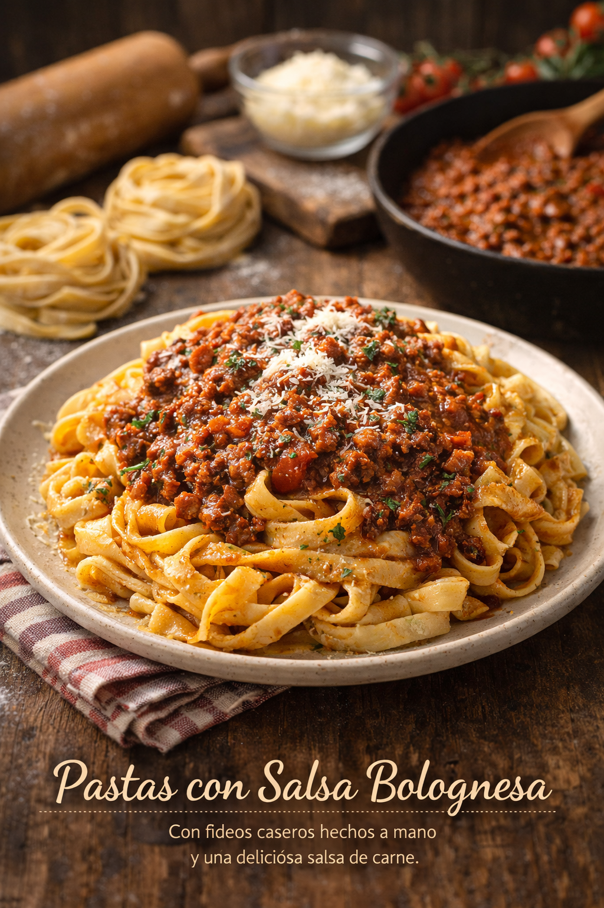

Los Domingos en casa de la nona se comían los Moquis (dijo el más chiquito)

Ñoquis con Salsa y Carne estilo Caracú
Tiernos ñoquis acompañados de carne jugosa y huesos con caracú en una rica salsa.
Nunca faltaban las increíbles empanadas acompañas de unas buenas pizzas caseras..

Empanadas de Carne
Crujientes y bien rellenas, con carne jugosa, huevo, aceitunas y mucho sabor casero.
A veces era turno de ellos. Los mejores fideos caseros del planeta.

Pastas con Salsa Bolognesa
Con fideos caseros hechos a mano y una deliciosa salsa de carne.